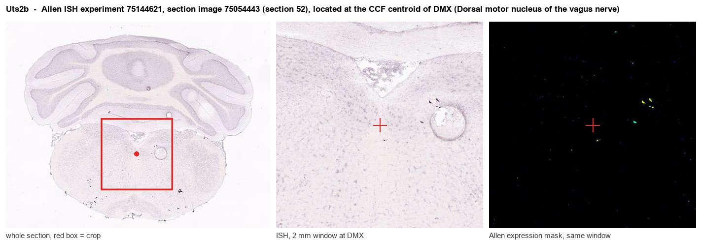
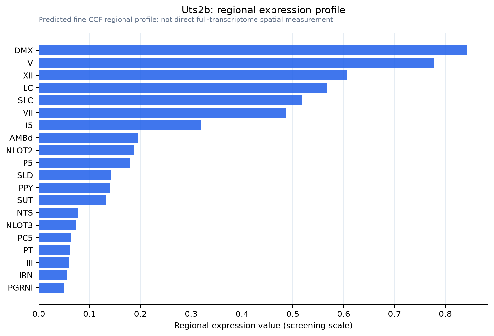

Uts2b
Spatial tier: STRICT_EXCLUSIVE · Class: OTHER · Top region: DMX (Dorsal motor nucleus of the vagus nerve) · Positive regions: 10/554
53.2Discovery Score
44.3Targetability Score
CEvidence grade C
What this means: Uts2b: predicted fine-region profile is strict-exclusive, with 10 positive regions out of 554 (limit 12); direct spatial validation is required.
Function in DMX: evidence, prediction, innovation
- Gene function
- Uts2b encodes urotensin II-related peptide (URP), a short cyclic peptide that is the paralogue of urotensin II. Both act on the same class A GPCR, the urotensin receptor UT (Uts2r), which signals through Gq/phospholipase C and calcium and is one of the most potent vasoconstrictors known in the periphery. In the CNS URP is made by motoneurons and behaves as a neuropeptide co-transmitter.
- Region function
- The dorsal motor nucleus of the vagus provides cholinergic preganglionic parasympathetic innervation of the gastrointestinal tract, pancreas and heart, setting gastric motility, secretion and vagal cardiac tone.
- Published in this region
- expression only Dun et al. 2001 (Neurosci Lett) found urotensin II immunoreactivity in cholinergic (ChAT+) motoneurons of the rat dorsal motor nucleus of the vagus, along with hypoglossal, facial, ambiguus, abducens and trigeminal motor nuclei. Dubessy et al. 2008 (J Neurochem) showed in mouse that UII and URP (Uts2b) mRNAs are predominantly expressed in brainstem and spinal motoneurons, with differential distribution across nuclei, and demonstrated UII-like immunoreactivity at motor end plates. Jegou et al. 2006 (J Comp Neurol) mapped UT receptor across rat CNS including brainstem. No functional study targets URP in the DMV.
- Predicted function
- Prediction: URP is co-released with acetylcholine from vagal preganglionic terminals and acts on UT receptors on enteric or cardiac ganglion neurons (and possibly on smooth muscle) to potentiate or prolong parasympathetic effects on motility and secretion. Conditional Uts2b deletion or UT antagonism should blunt slow, peptidergic components of vago-vagal gastric reflexes while sparing fast cholinergic transmission; chemogenetic activation of Uts2b+ DMV neurons should evoke long-lasting gastric or cardiac responses resistant to atropine.
- Innovation
- ★★★★★ 5/5 Expression in vagal motoneurons has been known for two decades yet no one has tested what URP does in this autonomic output.
- Tools
- UT receptor antagonists urantide, palosuran and SB-706375; UII/URP peptides as agonists; uts2b BAC transgenic motoneuron driver established in Xenopus (Bougerol et al. 2015); Chat-Cre for vagal motoneurons; anti-UII/URP antisera; Allen mouse ISH datasets 75144621 (coronal) and 73716668 (sagittal). No mouse Uts2b-Cre reported.
- References
Direct evidence located at the region

Allen ISH experiment 75144621, section image 75054443 (section 52): the section that contains the CCF centroid of Dorsal motor nucleus of the vagus nerve according to the Allen image-to-atlas alignment (reference_to_image), with a 2 mm window around that point. Left: whole section, red box = window. Middle: ISH signal. Right: Allen's expression-mask view of the same window. open this image in the Allen viewer
Look it up yourself: Allen Mouse Brain ISH for Uts2bAllen reference atlas: DMX (structure 839)ABC Atlas MERFISH viewer(in the ABC Atlas choose dataset MERFISH-C57BL6J-638850-CCF, colour cells by gene "Uts2b" or by parcellation_substructure "DMX")All genes confined to DMX + 3-D brain
Direct spatial evidence
MERFISH REGION LOCATOR

Regional expression figure

Predicted WMB × fine-CCF profile; not direct full-transcriptome spatial measurement.
Spatial profile
Evidence and specificity
- Evidence status
- PREDICTED_FINE
- Direct sources
- None; predicted localization only
- Exclusive threshold
- 12 positive regions out of 554
- Spatial specificity
- 0.503
- Top-region fraction
- 0.137
- Filter status
- PASS
Interpretation limits
- Cell-type-to-region projection is imputed expression, not direct spatial measurement.
- Adult reference atlases do not establish stability across age, sex, strain, state, or disease.
- Transcript abundance does not guarantee protein abundance or genetic-tool performance.